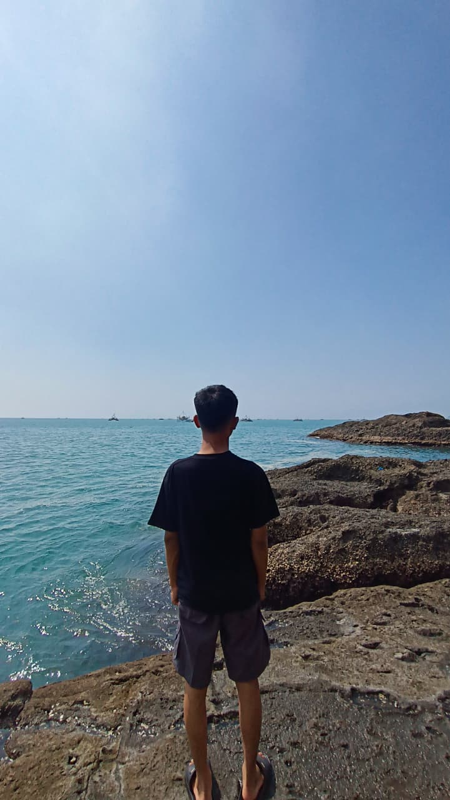

ONE PAGE DESAIN

Saya adalah seorang pelajar Smkn 6 Tangerang Selatan program keahlian REKAYASA PERANGKAT LUNAK, Saya sedang berusaha belajar agar bisa meningkatkan skill .
Saya sangat menyukai berbagai hal, salah satu contoh nya saya suka makan ayam geprek, minuman favorite saya adalah kopi, thaitea dan coklat, saya juga memiliki hobi seperti membaca,jalan jalan dan mendengarkan musik
Analytical Exposition adalah teks yang berisi pendapat atau ide penulis mengenai suatu topik, yang bertujuan untuk meyakinkan pembaca bahwa pendapat tersebut penting atau benar. Struktur: Thesis → memperkenalkan topik dan pendapat penulis. Arguments → memberikan alasan atau argumen yang mendukung pendapat. Reiteration → menegaskan kembali pendapat penulis. Language Features: Menggunakan Simple Present Tense. Menggunakan kata penghubung, seperti because, therefore, furthermore, dan however. Menggunakan kata-kata untuk menyatakan pendapat, seperti I believe, I think, dan in my opinion. Menggunakan alasan dan fakta untuk memperkuat argumen.
Saya mempelajari Sich Vorstellen (Perkenalan Diri) Begrüßung & Name Memahami salam sapaan (Guten Tag, Hallo) dan ungkapan perkenalan nama menggunakan pola kalimat "Ich heiße..." atau "Mein Name ist..." Wohnort & Adresse (Tempat Tinggal) Wo wohnen Sie? Menyebutkan tempat tinggal dan domisili saat ini menggunakan kata kerja wohnen (contoh: "Ich wohne in Sud Tangerang").
Yang saya pelajari adalah Berpikir kritis adalah kemampuan untuk memahami, menganalisis, dan mempertimbangkan suatu informasi sebelum mengambil keputusan. Dalam Islam, kita dianjurkan untuk menggunakan akal dan tidak langsung menerima suatu informasi tanpa memeriksanya. Dalil: 📖 QS. Al-Hujurat ayat 6 mengajarkan agar kita memeriksa dan meneliti berita yang datang, terutama ketika berita tersebut berasal dari orang yang tidak dapat dipercaya. Penerapan dalam kehidupan: Tidak mudah percaya pada informasi yang belum terbukti. Memeriksa kebenaran berita sebelum menyebarkannya. Menganalisis masalah dengan akal dan pertimbangan yang baik. Mengambil keputusan berdasarkan fakta dan alasan yang benar. IPTEK (Ilmu Pengetahuan dan Teknologi) adalah pengetahuan dan teknologi yang membantu manusia dalam menjalankan kehidupan. Materi yang dipelajari: Pentingnya menuntut ilmu. Mengikuti perkembangan teknologi. Menggunakan teknologi secara bijak dan bertanggung jawab. Memanfaatkan IPTEK untuk hal-hal yang positif. Mengembangkan kemampuan dan kreativitas melalui teknologi. Mensyukuri nikmat adalah menyadari, menghargai, dan berterima kasih atas segala pemberian dan kebaikan yang kita terima. Materi yang dipelajari: Menyadari berbagai nikmat yang dimiliki. Mengucapkan syukur atas pemberian Tuhan. Menggunakan nikmat dengan baik dan tidak berlebihan. Tidak mengeluh dan selalu menghargai apa yang dimiliki. Berbagi dan membantu orang lain sebagai bentuk rasa syukur.
Saya mempelajari dasar-dasar pemrograman, logika pemrograman, dan pembuatan aplikasi sederhana seperti ucapan selamat ulang tahun.
Yang dapat saya pelajari dari pak roy adalah tentang pengenalan Database Management dan cara mendownload , Serta bagaimana cara membuat tabel.
Saya mempelajari bagaimana cara membuat portofolio, mendesain web serta bagaimana cara hosting web saya di github yang diajari oleh bu dinda.